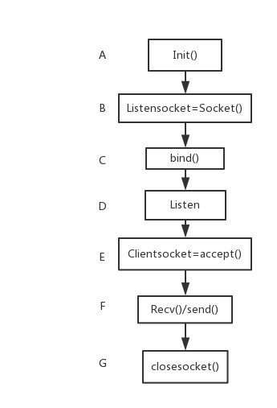
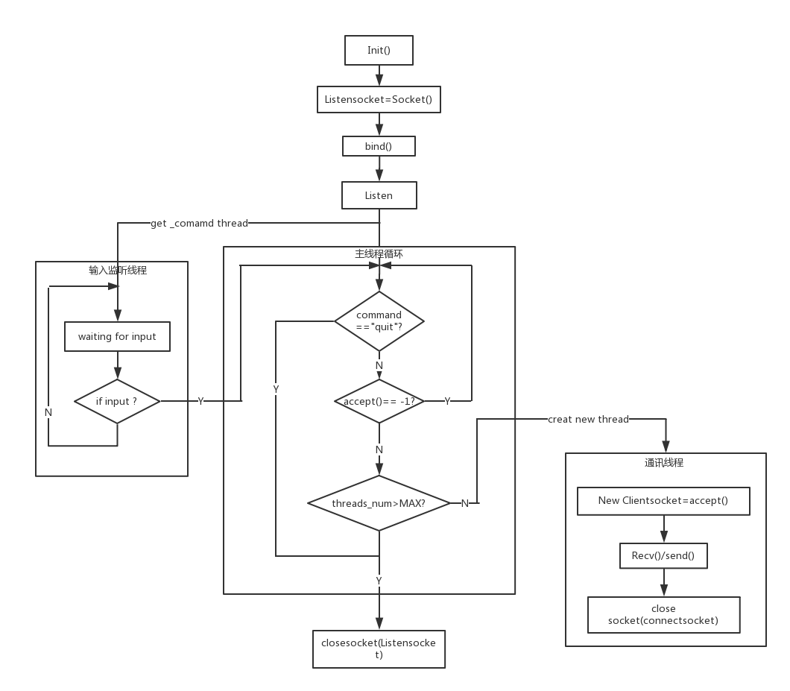

<!DOCTYPE html>
<html>
<head><meta name="generator" content="Hexo 3.8.0">

    <!--[if lt IE 9]>
        <style>body {display: none; background: none !important} </style>
        <meta http-equiv="Refresh" Content="0; url=//outdatedbrowser.com/" />
    <![endif]-->

<meta charset="utf-8">
<meta http-equiv="X-UA-Compatible" content="IE=edge, chrome=1">
<meta name="viewport" content="width=device-width, initial-scale=1, maximum-scale=1, user-scalable=no">
<meta name="format-detection" content="telephone=no">
<meta name="author" content="Shao Ze wei">


<meta name="description" content="计算机网络实验：用Winsocket编写一个web服务器。要求：能够处理响应报文，发送各种类型的文件，多线程实现。">
<meta name="keywords" content="WinSocket,网络通信,多线程,web_server">
<meta property="og:type" content="article">
<meta property="og:title" content="WinSocket编程实现web_server">
<meta property="og:url" content="http://yoursite.com/2018/11/25/Web-server/index.html">
<meta property="og:site_name" content="不忘初心">
<meta property="og:description" content="计算机网络实验：用Winsocket编写一个web服务器。要求：能够处理响应报文，发送各种类型的文件，多线程实现。">
<meta property="og:locale" content="default">
<meta property="og:image" content="http://yoursite.com/2018/11/25/Web-server/1.png">
<meta property="og:image" content="http://yoursite.com/2018/11/25/Web-server/2.png">
<meta property="og:updated_time" content="2018-11-25T10:02:14.256Z">
<meta name="twitter:card" content="summary">
<meta name="twitter:title" content="WinSocket编程实现web_server">
<meta name="twitter:description" content="计算机网络实验：用Winsocket编写一个web服务器。要求：能够处理响应报文，发送各种类型的文件，多线程实现。">
<meta name="twitter:image" content="http://yoursite.com/2018/11/25/Web-server/1.png">

<link rel="apple-touch-icon" href="/apple-touch-icon.png">


    <link rel="alternate" href="/atom.xml" title="不忘初心" type="application/atom+xml">


    <link rel="shortcut icon" href="/favicon.png">


    <link href="//cdn.bootcss.com/animate.css/3.5.1/animate.min.css" rel="stylesheet">


    <link href="//cdn.bootcss.com/fancybox/2.1.5/jquery.fancybox.min.css" rel="stylesheet">


    <script src="//cdn.bootcss.com/pace/1.0.2/pace.min.js"></script>
    <link href="//cdn.bootcss.com/pace/1.0.2/themes/blue/pace-theme-minimal.css" rel="stylesheet">


<link rel="stylesheet" href="/css/style.css">


<link href="//cdn.bootcss.com/font-awesome/4.6.3/css/font-awesome.min.css" rel="stylesheet">


<title>WinSocket编程实现web_server | 不忘初心</title>

<script src="//cdn.bootcss.com/jquery/2.2.4/jquery.min.js"></script>
<script src="//cdn.bootcss.com/clipboard.js/1.5.10/clipboard.min.js"></script>

<script>
    var yiliaConfig = {
        fancybox: true,
        animate: true,
        isHome: false,
        isPost: true,
        isArchive: false,
        isTag: false,
        isCategory: false,
        fancybox_js: "//cdn.bootcss.com/fancybox/2.1.5/jquery.fancybox.min.js",
        scrollreveal: "//cdn.bootcss.com/scrollReveal.js/3.1.4/scrollreveal.min.js",
        search: true
    }
</script>


    <script>
        yiliaConfig.jquery_ui = [true, "//cdn.bootcss.com/jqueryui/1.10.4/jquery-ui.min.js", "//cdn.bootcss.com/jqueryui/1.10.4/css/jquery-ui.min.css"];
    </script>


    <script> yiliaConfig.rootUrl = "\/";</script>


</head></html>
<body>
  <div id="container">
    <div class="left-col">
    <div class="overlay"></div>
<div class="intrude-less">
    <header id="header" class="inner">
        <a href="/" class="profilepic">
            
        </a>
        <hgroup>
          <h1 class="header-author"><a href="/">Shao Ze wei</a></h1>
        </hgroup>

        

        
            <form id="search-form">
            <input type="text" id="local-search-input" name="q" placeholder="search..." class="search form-control" autocomplete="off" autocorrect="off" searchonload="">
            <i class="fa fa-times" onclick="resetSearch()"></i>
            </form>
            <div id="local-search-result"></div>
            <p class="no-result">No results found <i class="fa fa-spinner fa-pulse"></i></p>
        


        
            <div id="switch-btn" class="switch-btn">
                <div class="icon">
                    <div class="icon-ctn">
                        <div class="icon-wrap icon-house" data-idx="0">
                            <div class="birdhouse"></div>
                            <div class="birdhouse_holes"></div>
                        </div>
                        <div class="icon-wrap icon-ribbon hide" data-idx="1">
                            <div class="ribbon"></div>
                        </div>
                        
                        <div class="icon-wrap icon-link hide" data-idx="2">
                            <div class="loopback_l"></div>
                            <div class="loopback_r"></div>
                        </div>
                        
                        
                        <div class="icon-wrap icon-me hide" data-idx="3">
                            <div class="user"></div>
                            <div class="shoulder"></div>
                        </div>
                        
                    </div>
                    
                </div>
                <div class="tips-box hide">
                    <div class="tips-arrow"></div>
                    <ul class="tips-inner">
                        <li>菜单</li>
                        <li>标签</li>
                        
                        <li>友情链接</li>
                        
                        
                        <li>关于我</li>
                        
                    </ul>
                </div>
            </div>
        

        <div id="switch-area" class="switch-area">
            <div class="switch-wrap">
                <section class="switch-part switch-part1">
                    <nav class="header-menu">
                        <ul>
                        
                            <li><a href="/">主页</a></li>
                        
                            <li><a href="/archives/">所有文章</a></li>
                        
                            <li><a href="/tags/">标签云</a></li>
                        
                            <li><a href="/about/">关于我</a></li>
                        
                        </ul>
                    </nav>
                    <nav class="header-nav">
                        <ul class="social">
                            
                                <a class="fa Email" href="/1005204767@qq.com" title="Email"></a>
                            
                                <a class="fa GitHub" href="https://github.com/loveshrimp" title="GitHub"></a>
                            
                                <a class="fa RSS" href="/atom.xml" title="RSS"></a>
                            
                        </ul>
                    </nav>
                </section>
                
                
                <section class="switch-part switch-part2">
                    <div class="widget tagcloud" id="js-tagcloud">
                        <ul class="tag-list"><li class="tag-list-item"><a class="tag-list-link" href="/tags/BFS/">BFS</a></li><li class="tag-list-item"><a class="tag-list-link" href="/tags/WinSocket/">WinSocket</a></li><li class="tag-list-item"><a class="tag-list-link" href="/tags/web-server/">web_server</a></li><li class="tag-list-item"><a class="tag-list-link" href="/tags/动态规划/">动态规划</a></li><li class="tag-list-item"><a class="tag-list-link" href="/tags/多线程/">多线程</a></li><li class="tag-list-item"><a class="tag-list-link" href="/tags/字符串匹配/">字符串匹配</a></li><li class="tag-list-item"><a class="tag-list-link" href="/tags/正则表达式/">正则表达式</a></li><li class="tag-list-item"><a class="tag-list-link" href="/tags/网络通信/">网络通信</a></li></ul>
                    </div>
                </section>
                
                
                
                <section class="switch-part switch-part3">
                    <div id="js-friends">
                    
                      <a class="main-nav-link switch-friends-link" href="https://hexo.io">Hexo</a>
                    
                      <a class="main-nav-link switch-friends-link" href="https://pages.github.com/">GitHub</a>
                    
                    </div>
                </section>
                

                
                
                <section class="switch-part switch-part4">
                
                    <div id="js-aboutme">菜鸡一个</div>
                </section>
                
            </div>
        </div>
    </header>                
</div>
    </div>
    <div class="mid-col">
      <nav id="mobile-nav">
      <div class="overlay">
          <div class="slider-trigger"></div>
          <h1 class="header-author js-mobile-header hide"><a href="/" title="回到主页">Shao Ze wei</a></h1>
      </div>
    <div class="intrude-less">
        <header id="header" class="inner">
            <a href="/" class="profilepic">
                
            </a>
            <hgroup>
              <h1 class="header-author"><a href="/" title="回到主页">Shao Ze wei</a></h1>
            </hgroup>
            
            <nav class="header-menu">
                <ul>
                
                    <li><a href="/">主页</a></li>
                
                    <li><a href="/archives/">所有文章</a></li>
                
                    <li><a href="/tags/">标签云</a></li>
                
                    <li><a href="/about/">关于我</a></li>
                
                <div class="clearfix"></div>
                </ul>
            </nav>
            <nav class="header-nav">
                        <ul class="social">
                            
                                <a class="fa Email" target="_blank" href="/1005204767@qq.com" title="Email"></a>
                            
                                <a class="fa GitHub" target="_blank" href="https://github.com/loveshrimp" title="GitHub"></a>
                            
                                <a class="fa RSS" target="_blank" href="/atom.xml" title="RSS"></a>
                            
                        </ul>
            </nav>
        </header>                
    </div>
    <link class="menu-list" tags="标签" friends="友情链接" about="关于我">
</nav>
      <div class="body-wrap"><article id="post-Web-server" class="article article-type-post" itemscope="" itemprop="blogPost">
  
    <div class="article-meta">
      <a href="/2018/11/25/Web-server/" class="article-date">
      <time datetime="2018-11-25T08:33:08.368Z" itemprop="datePublished">2018-11-25</time>
</a>


    </div>
  
  <div class="article-inner">
    
      <input type="hidden" class="isFancy">
    
    
      <header class="article-header">
        
  
    <h1 class="article-title" itemprop="name">
      WinSocket编程实现web_server
    </h1>
  

      </header>
      
      <div class="article-info article-info-post">
        
    <div class="article-category tagcloud">
    <a class="article-category-link" href="/categories/计算机网络/">计算机网络</a>
    </div>


        
    <div class="article-tag tagcloud">
        <ul class="article-tag-list"><li class="article-tag-list-item"><a class="article-tag-list-link" href="/tags/WinSocket/">WinSocket</a></li><li class="article-tag-list-item"><a class="article-tag-list-link" href="/tags/web-server/">web_server</a></li><li class="article-tag-list-item"><a class="article-tag-list-link" href="/tags/多线程/">多线程</a></li><li class="article-tag-list-item"><a class="article-tag-list-link" href="/tags/网络通信/">网络通信</a></li></ul>
    </div>

        <div class="clearfix"></div>
      </div>
      
    
    <div class="article-entry" itemprop="articleBody">
      
          
        <p>计算机网络实验：用Winsocket编写一个web服务器。要求：能够处理响应报文，发送各种类型的文件，多线程实现。<br><a id="more"></a></p>
<h2 id="Winsocket介绍"><a href="#Winsocket介绍" class="headerlink" title="Winsocket介绍"></a>Winsocket介绍</h2><h3 id="什么是Socket编程"><a href="#什么是Socket编程" class="headerlink" title="什么是Socket编程"></a>什么是Socket编程</h3><p>由于老师上课的时候从来没有具体的讲过Socket编程，因此，什么是Socket编程便成了我的第一个问题。<br>通俗的来讲socket编程就是为了来写可以联网的应用程序的。像我们平常使用的qq，它其实是一个程序，程序是静态的概念，就是一段代码。当我们双击qq图标时。操作系统将这段代码加载到内存中并分配相应的内存空间，此时便产生了一个进程。当我们再次双击图标时，程序又会再次加载一遍生成另外一个进程。Socket就是为了实现不同电脑（主机）上的不同进程之间的通信问题的一个编程接口。它是一个接口（称为套接字）你只需要将数据扔给他，他就会将数据传送到相互通信的另一个套接字中，而不需要关注数据是如何在运输层和链路层运输的。当有数据传输给你时，你只需要从socket中去取数据即可。</p>
<h3 id="winSocket介绍"><a href="#winSocket介绍" class="headerlink" title="winSocket介绍"></a>winSocket介绍</h3><p>WinSocket是windows系统下的Socket编程api。<br>Winsock 是通过动态链接库的方式提供给软件开发者，而且从Windows 95以后已经被集成到了Windows操作系统中。Winsock主要经历了2个版本：Winsock 1.1和Winsock 2.0。Winsock 2.0是Winsock 1.1的扩展，它向下完全兼容。Winsock同时包括了16位和32位的编程接口，16位的Windows Socket 2应用程序使用的动态链接库是WINSOCK.DLL，而32位的Windows Socket应用程序使用WSOCK32.DLL（Winsock 1.1版）和WS2_32.DLL（Winsock 2.0版）。另外，使用Winsock API时要包含头文件winsock.h（Winsock 1.1版）或winsock2.h（Winsock 2.0版）。  </p>
<h3 id="Socket编程的一般步骤"><a href="#Socket编程的一般步骤" class="headerlink" title="Socket编程的一般步骤"></a>Socket编程的一般步骤</h3><p>流程图如下<br></p>
<ul>
<li><strong>步骤A：</strong> 初始化,为Winsocket调用准备环境。</li>
<li><strong>步骤B：</strong> 建立一个监听套接字（用于监听连接请求）。</li>
<li><strong>步骤C：</strong> 绑定端口号（默认80）主机网卡等信息。</li>
<li><strong>步骤D：</strong> 开始监听。</li>
<li><strong>步骤E：</strong> 接收到请求连接，新建立一个连接套接字负责和请求方通讯。</li>
<li><strong>步骤F：</strong> 收发信息。</li>
<li><strong>步骤G：</strong> 关闭socket连接。</li>
</ul>
<p>如需查找相关函数定义请下载<a href="https://github.com/loveshrimp/web-server" target="_blank" rel="noopener">文档</a></p>
<h2 id="Web服务器的实现"><a href="#Web服务器的实现" class="headerlink" title="Web服务器的实现"></a>Web服务器的实现</h2><p><strong>需要实现的功能</strong></p>
<ol>
<li>可配置Web服务器的监听地址、监听端口和虚拟路径。</li>
<li>从连接套接字接收http请求报文，并根据请求报文的确定用户请求的网页文件；</li>
<li>支持多线程，能够针对每一个新的请求创建新的线程，每个客户请求启动一个线程为该客户服务；</li>
<li>服务可以启动和关闭。</li>
</ol>
<h3 id="配置服务器"><a href="#配置服务器" class="headerlink" title="配置服务器"></a>配置服务器</h3><p>该功能只需设立全局变量，在用户启动时提示配置。其中监听地址和监听端口只需在bond()的时候当作参数传入即可。虚拟路径在打开文件时与文件名拼接成绝对路径使用。为了降低用户配置难度和测试方便性，增设默认配置选项。</p>
<h3 id="发送资源"><a href="#发送资源" class="headerlink" title="发送资源"></a>发送资源</h3><p>首先，接收到一个http请求的时候，对请求进行分析。例如如果浏览器请求一个hello.html文件。服务器得到的报文为：<br><figure class="highlight plain"><table><tr><td class="gutter"><pre><span class="line">1</span><br><span class="line">2</span><br><span class="line">3</span><br><span class="line">4</span><br><span class="line">5</span><br><span class="line">6</span><br><span class="line">7</span><br><span class="line">8</span><br></pre></td><td class="code"><pre><span class="line">GET /hello.html HTTP/1.1</span><br><span class="line">Host: 127.0.0.1</span><br><span class="line">Connection: keep-alive</span><br><span class="line">User-Agent: Mozilla/5.0 (Windows NT 10.0; Win64; x64) AppleWebKit/537.36 (KHTML, like Gecko) Chrome/68.0.3440.84 Safari/537.36</span><br><span class="line">Accept: image/webp,image/apng,image/*,*/*;q=0.8</span><br><span class="line">Referer: http://127.0.0.1/hello.html</span><br><span class="line">Accept-Encoding: gzip, deflate, br</span><br><span class="line">Accept-Language: zh-CN,zh;q=0.9,en;q=0.8</span><br></pre></td></tr></table></figure></p>
<p>通过对报文分析，可以得到申请的文件名”hello.html”（通过自己定义的get_filename()得到，详见代码，文末附上），然后通过提前配置的虚拟路径与文件名拼接成为浏览器所申请文件的绝对路径。再通过send_file()函数发送资源。get_filename()和send_file()两个函数是相对容易出问题的点。另外发送的时候构造的报文需要加上contant-length（为了告诉浏览器何时文件发送完毕，停止接收。）否则浏览器将一直处于接受状态。<br><figure class="highlight c"><table><tr><td class="gutter"><pre><span class="line">1</span><br><span class="line">2</span><br><span class="line">3</span><br><span class="line">4</span><br><span class="line">5</span><br><span class="line">6</span><br><span class="line">7</span><br><span class="line">8</span><br><span class="line">9</span><br><span class="line">10</span><br><span class="line">11</span><br><span class="line">12</span><br><span class="line">13</span><br><span class="line">14</span><br><span class="line">15</span><br><span class="line">16</span><br><span class="line">17</span><br></pre></td><td class="code"><pre><span class="line">get_filename()函数定义：</span><br><span class="line"><span class="function"><span class="keyword">void</span> *<span class="title">get_filename</span><span class="params">(<span class="keyword">char</span>* buf,<span class="keyword">int</span> buflen,<span class="keyword">char</span>* filename)</span></span></span><br><span class="line"><span class="function"><span class="comment">/*</span></span></span><br><span class="line"><span class="function"><span class="comment">*	函数功能：截取浏览器响应报文中申请的文件名并返回</span></span></span><br><span class="line"><span class="function"><span class="comment">*	输入：char* buf	接受响应报文缓冲区</span></span></span><br><span class="line"><span class="function"><span class="comment">*	输出：char *filename	申请的目标文件</span></span></span><br><span class="line"><span class="function"><span class="comment">*/</span> </span></span><br><span class="line"><span class="function"></span></span><br><span class="line">send_file()函数定义：</span><br><span class="line"><span class="function"><span class="keyword">int</span> <span class="title">send_file</span><span class="params">(SOCKET soc, <span class="keyword">char</span> *buf, <span class="keyword">int</span> buflen)</span></span></span><br><span class="line"><span class="function"><span class="comment">/*</span></span></span><br><span class="line"><span class="function"><span class="comment">*		函数功能：根据响应报文发送指定文件</span></span></span><br><span class="line"><span class="function"><span class="comment">*		输入：	SOCKET soc	用于通信的套接字</span></span></span><br><span class="line"><span class="function"><span class="comment">*				char *buf	接收缓冲区</span></span></span><br><span class="line"><span class="function"><span class="comment">*				int buflen	缓冲区大小</span></span></span><br><span class="line"><span class="function"><span class="comment">*		返回值：	成功1 失败0</span></span></span><br><span class="line"><span class="function"><span class="comment">*/</span></span></span><br></pre></td></tr></table></figure></p>
<h3 id="多线程实现"><a href="#多线程实现" class="headerlink" title="多线程实现"></a>多线程实现</h3><p>想法是对每个接收到的连接请求都开一个新的线程与之通信。定义一个线程池用于存储一定数量的connectsocket，如果请求来到，并且线程池内有可用线程时，将该线程分配出去，并且将线程状态设为占用，每次有新请求时对线程池的每个线程进行遍历，发现未使用线程时就分配。如果线程池内所有线程均处于占用状态并且还有新请求到来时，请求进行排队。（详见代码）<br>通讯线程的入口函数定义如下：<br><figure class="highlight c"><table><tr><td class="gutter"><pre><span class="line">1</span><br><span class="line">2</span><br><span class="line">3</span><br><span class="line">4</span><br><span class="line">5</span><br><span class="line">6</span><br><span class="line">7</span><br><span class="line">8</span><br></pre></td><td class="code"><pre><span class="line"><span class="function">DWORD WINAPI <span class="title">communicat</span><span class="params">(LPVOID pParam)</span></span></span><br><span class="line">传入参数的结构定义：</span><br><span class="line"><span class="keyword">typedef</span> <span class="class"><span class="keyword">struct</span> <span class="title">ThreadParameter</span> &#123;</span></span><br><span class="line">	SOCKET ConnectSocket;<span class="comment">//负责通信的套接字</span></span><br><span class="line">	SOCKADDR_IN addrClient;<span class="comment">//地址</span></span><br><span class="line">	<span class="keyword">bool</span> state;<span class="comment">//该套接字当前状态，占用1，否则0；</span></span><br><span class="line">	HANDLE thread;</span><br><span class="line">&#125;;</span><br></pre></td></tr></table></figure></p>
<p>多线程实现流程图：<br></p>
<h3 id="服务启动和关闭"><a href="#服务启动和关闭" class="headerlink" title="服务启动和关闭"></a>服务启动和关闭</h3><p>要想实现在监听过程中对命令的实时反应。想法是另开一个线程监听键盘输入，然后在主线程的循环中对，接收到的命令做出处理。实现过程可参考上方的流程图。为了实现实时处理，将listensocket设为非阻塞模式。</p>
<h3 id="程序代码"><a href="#程序代码" class="headerlink" title="程序代码"></a>程序代码</h3><p><a href="https://github.com/loveshrimp/web-server" target="_blank" rel="noopener">点击这里</a></p>
<h2 id="总结"><a href="#总结" class="headerlink" title="总结"></a>总结</h2><p>socket通讯流程大同小异，熟悉了winsocket对于其它语言的socket编程也就容易掌握。重点在于报文的处理。虽然该实验实现了多线程，但是自己对于多线程的理解还不是很深刻，特别是不同线程之间的同步和互斥在windows下没有暴露出太多问题。在以后需要编写多线程的实践中，要加强对着一部分的实践和理解。另外有时间了要学一学写ui啊，控制台界面实在看不下去了😭。</p>

      
    </div>
    
  </div>
  
    


    <nav id="article-nav">
        
            <div id="article-nav-newer" class="article-nav-title">
                <a href="/2018/11/29/test/">
                    test
                </a>
            </div>
        
        
            <div id="article-nav-older" class="article-nav-title">
                <a href="/2018/11/24/算法3：买卖股票的最佳时机/">
                    算法3：买卖股票的最佳时机
                </a>
            </div>
        
    </nav>

  
</article>

    <div id="toc" class="toc-article">
        <strong class="toc-title">文章目录</strong>
        
            <ol class="toc"><li class="toc-item toc-level-2"><a class="toc-link" href="#Winsocket介绍"><span class="toc-number">1.</span> <span class="toc-text">Winsocket介绍</span></a><ol class="toc-child"><li class="toc-item toc-level-3"><a class="toc-link" href="#什么是Socket编程"><span class="toc-number">1.1.</span> <span class="toc-text">什么是Socket编程</span></a></li><li class="toc-item toc-level-3"><a class="toc-link" href="#winSocket介绍"><span class="toc-number">1.2.</span> <span class="toc-text">winSocket介绍</span></a></li><li class="toc-item toc-level-3"><a class="toc-link" href="#Socket编程的一般步骤"><span class="toc-number">1.3.</span> <span class="toc-text">Socket编程的一般步骤</span></a></li></ol></li><li class="toc-item toc-level-2"><a class="toc-link" href="#Web服务器的实现"><span class="toc-number">2.</span> <span class="toc-text">Web服务器的实现</span></a><ol class="toc-child"><li class="toc-item toc-level-3"><a class="toc-link" href="#配置服务器"><span class="toc-number">2.1.</span> <span class="toc-text">配置服务器</span></a></li><li class="toc-item toc-level-3"><a class="toc-link" href="#发送资源"><span class="toc-number">2.2.</span> <span class="toc-text">发送资源</span></a></li><li class="toc-item toc-level-3"><a class="toc-link" href="#多线程实现"><span class="toc-number">2.3.</span> <span class="toc-text">多线程实现</span></a></li><li class="toc-item toc-level-3"><a class="toc-link" href="#服务启动和关闭"><span class="toc-number">2.4.</span> <span class="toc-text">服务启动和关闭</span></a></li><li class="toc-item toc-level-3"><a class="toc-link" href="#程序代码"><span class="toc-number">2.5.</span> <span class="toc-text">程序代码</span></a></li></ol></li><li class="toc-item toc-level-2"><a class="toc-link" href="#总结"><span class="toc-number">3.</span> <span class="toc-text">总结</span></a></li></ol>
        
    </div>
    <style>
        .left-col .switch-btn,
        .left-col .switch-area {
            display: none;
        }
        .toc-level-3 i,
        .toc-level-3 ol {
            display: none !important;
        }
    </style>

    <input type="button" id="tocButton" value="隐藏目录" title="点击按钮隐藏或者显示文章目录">

    <script>
        yiliaConfig.toc = ["隐藏目录", "显示目录", !!"false"];
    </script>


    
<div class="share">
    
        <div class="bdsharebuttonbox">
            <a href="#" class="fa fa-twitter bds_twi" data-cmd="twi" title="分享到推特"></a>
            <a href="#" class="fa fa-weibo bds_tsina" data-cmd="tsina" title="分享到新浪微博"></a>
            <a href="#" class="fa fa-qq bds_sqq" data-cmd="sqq" title="分享给 QQ 好友"></a>
            <a href="#" class="fa fa-files-o bds_copy" data-cmd="copy" title="复制网址"></a>
            <a href="#" class="fa fa fa-envelope-o bds_mail" data-cmd="mail" title="通过邮件分享"></a>
            <a href="#" class="fa fa-weixin bds_weixin" data-cmd="weixin" title="生成文章二维码"></a>
            <a href="#" class="fa fa-share-alt bds_more" data-cmd="more"></a>
        </div>
        <script>
            window._bd_share_config={
                "common":{"bdSnsKey":{},"bdText":"WinSocket编程实现web_server　| 不忘初心　","bdMini":"2","bdMiniList":false,"bdPic":"","bdStyle":"0","bdSize":"24"},"share":{}};with(document)0[(getElementsByTagName('head')[0]||body).appendChild(createElement('script')).src='http://bdimg.share.baidu.com/static/api/js/share.js?v=89860593.js?cdnversion='+~(-new Date()/36e5)];
        </script>
    

    
</div>


    


    <div class="scroll" id="post-nav-button">
        
            <a href="/2018/11/29/test/" title="上一篇: test">
                <i class="fa fa-angle-left"></i>
            </a>
        

        <a title="文章列表"><i class="fa fa-bars"></i><i class="fa fa-times"></i></a>

        
            <a href="/2018/11/24/算法3：买卖股票的最佳时机/" title="下一篇: 算法3：买卖股票的最佳时机">
                <i class="fa fa-angle-right"></i>
            </a>
        
    </div>

    <ul class="post-list"><li class="post-list-item"><a class="post-list-link" href="/2018/11/29/test/">test</a></li><li class="post-list-item"><a class="post-list-link" href="/2018/11/25/Web-server/">WinSocket编程实现web_server</a></li><li class="post-list-item"><a class="post-list-link" href="/2018/11/24/算法3：买卖股票的最佳时机/">算法3：买卖股票的最佳时机</a></li><li class="post-list-item"><a class="post-list-link" href="/2018/11/24/算法2：扫雷小游戏/">算法2：扫雷小游戏（leetcode-529）</a></li><li class="post-list-item"><a class="post-list-link" href="/2018/11/22/算法1：验证IP/">算法1：验证IP（leetcode-468）</a></li></ul>


    <script>
        
    </script>
</div>
      <footer id="footer">
    <div class="outer">
        <div id="footer-info">
            <div class="footer-left">
                <i class="fa fa-copyright"></i> 
                2018 Shao Ze wei
            </div>
            <div class="footer-right">
                <a href="http://hexo.io/" target="_blank" title="快速、简洁且高效的博客框架">Hexo</a>  Theme <a href="https://github.com/MOxFIVE/hexo-theme-yelee" target="_blank" title="简而不减 Hexo 双栏博客主题  v3.5">Yelee</a> by MOxFIVE <i class="fa fa-heart animated infinite pulse"></i>
            </div>
        </div>
        
            <div class="visit">
                
                    <span id="busuanzi_container_site_pv" style="display:none">
                        <span id="site-visit" title="本站到访数"><i class="fa fa-user" aria-hidden="true"></i><span id="busuanzi_value_site_uv"></span>
                        </span>
                    </span>
                
                
                    <span>| </span>
                
                
                    <span id="busuanzi_container_page_pv" style="display:none">
                        <span id="page-visit" title="本页阅读量"><i class="fa fa-eye animated infinite pulse" aria-hidden="true"></i><span id="busuanzi_value_page_pv"></span>
                        </span>
                    </span>
                
            </div>
        
    </div>
</footer>
    </div>
    
<script data-main="/js/main.js" src="//cdn.bootcss.com/require.js/2.2.0/require.min.js"></script>

    <script>
        $(document).ready(function() {
            var iPad = window.navigator.userAgent.indexOf('iPad');
            if (iPad > -1 || $(".left-col").css("display") === "none") {
                var bgColorList = ["#9db3f4", "#414141", "#e5a859", "#f5dfc6", "#c084a0", "#847e72", "#cd8390", "#996731"];
                var bgColor = Math.ceil(Math.random() * (bgColorList.length - 1));
                $("body").css({"background-color": bgColorList[bgColor], "background-size": "cover"});
            }
            else {
                var backgroundnum = 5;
                var backgroundimg = "url(/background/bg-x.jpg)".replace(/x/gi, Math.ceil(Math.random() * backgroundnum));
                $("body").css({"background": backgroundimg, "background-attachment": "fixed", "background-size": "cover"});
            }
        })
    </script>


    <script type="text/x-mathjax-config">
MathJax.Hub.Config({
    tex2jax: {
        inlineMath: [ ['$','$'], ["\\(","\\)"]  ],
        processEscapes: true,
        skipTags: ['script', 'noscript', 'style', 'textarea', 'pre', 'code']
    }
});

MathJax.Hub.Queue(function() {
    var all = MathJax.Hub.getAllJax(), i;
    for(i=0; i < all.length; i += 1) {
        all[i].SourceElement().parentNode.className += ' has-jax';                 
    }       
});
</script>

<script src="//cdn.bootcss.com/mathjax/2.6.1/MathJax.js?config=TeX-AMS-MML_HTMLorMML">
</script>


<div class="scroll" id="scroll">
    <a href="#" title="返回顶部"><i class="fa fa-arrow-up"></i></a>
    <a href="#comments" onclick="load$hide();" title="查看评论"><i class="fa fa-comments-o"></i></a>
    <a href="#footer" title="转到底部"><i class="fa fa-arrow-down"></i></a>
</div>
<script>
    // Open in New Window
    
        var oOpenInNew = {
            
            
            
            
            
            
             archives: ".archive-article-title", 
             miniArchives: "a.post-list-link", 
            
             friends: "#js-friends a", 
             socail: ".social a" 
        }
        for (var x in oOpenInNew) {
            $(oOpenInNew[x]).attr("target", "_blank");
        }
    
</script>

<script async src="https://dn-lbstatics.qbox.me/busuanzi/2.3/busuanzi.pure.mini.js">
</script>
  </div>
</body>
</html>